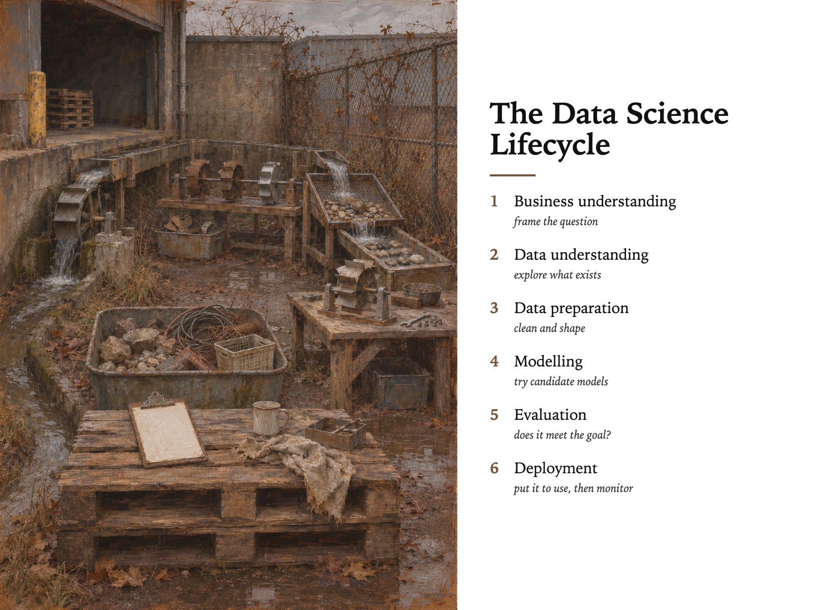

Style Vault / Gallery / One Spot All Year
One Spot All Year
SV-059

Example: The data science lifecycle, set in One Spot All Year
In plain words
The same ordinary, overlooked spot - a ditch, a fence corner - painted from the exact same place ten times through frost, mud, haze, heat and snow. It feels patient and gently absurd, because serious landscape care is spent on a place nobody notices. What makes it this style is that the viewpoint never moves; only time does. Best for: change over time stories; a year of learning; culture and patience in leadership; workshop reflection exercises. Avoid: text or lettering generated inside the image.
Topics it fits
- Change over time storiesone fixed vantage point turns before and after into a sequence anyone can read without a chart
- A year of learningthe same small place through every season mirrors a personal habit kept up quietly all year
- Culture and patience in leadershiplavishing attention on an unremarkable spot shows that steady attention, not drama, is the message
- Workshop reflection exercisesthe locked frame invites people to spot what changed, which is a ready-made group prompt
Art style and layout
- core locked [vantage_never_moves, place_is_beneath_notice, anchor_object_fixed, warm_ground_shows_through, no_weather_drama]
- the tension the full apparatus of serious landscape painting - the ground, the high horizon, the patience - spent on a drainage ditch. The frames are dignified and the subject does not deserve it, and that mismatch is the whole card
- vantage never moves THE CARD, and the thing that makes the sheet a *set* rather than ten pictures. MJ will re-frame by reflex. Repeat the vantage description word-for-word in all ten prompts and keep the anchor object in the same place. The season sweep only means something if the camera is a control
- place is beneath notice the instant the place becomes scenic - a lake, a hill, a pretty lane - the card is dead and it joins the 40,000 landscape listings. Say the ugly noun out loud:
loading bay,chain-link,drainage ditch - no weather drama no sunsets, no storms rendered as spectacle, no rainbows, no god rays. A downpour is grey and boring and that is correct. This is the second thing standing between this card and generic landscape decor
- warm ground shows through a single warm imprimatura visible in every frame is what makes ten different palettes read as one hand. Without it a season sweep looks like ten unrelated paintings, which is the exact failure Phoebe named on 2026-09-04 - *"the ten frames did not read as one style"*
- palette [warm ground "#A8763F showing through everywhere; season pairs on top - frost "#C9D2D6 + "#4A5358, thaw "#6B5540 + "#9AA0A2, heat "#D9C79B + "#E8E4D8, night rain "#1C2622 + "#D08A32]
- negative space the sky strip and any flat wall or tarmac are left thin and barely worked. Emptiness carries most of the frame in at least four of the ten
- era reference nineteenth-century observational landscape painting, plein-air oil sketching, long-term single-site photographic projects. Do not name a living artist
What must stay, what may change
season - one locked vantage point, ten states of weather and year (hard frost, thaw mud, first green, flat white haze, heat shimmer, sudden downpour, dust, low gold, first snow, night rain). This is the vault's FIRST season-axis sheet in 55. The subject and the camera never move; only the year does. NOT a subject sweep - the whole point is that the place is boring and constant
As JSON
Paste this into a prompt or a skill to reuse the style.
{
"id": "SV-059",
"name": "One Spot All Year",
"audience": [
"gallery"
],
"category": [
"photography"
],
"format": [
"illustration",
"poster"
],
"maker": "diffusion",
"keep_and_swap": "**season - one locked vantage point, ten states of weather and year** (hard frost, thaw mud, first green, flat white haze, heat shimmer, sudden downpour, dust, low gold, first snow, night rain). This is the vault's FIRST season-axis sheet in 55. The subject and the camera never move; only the year does. NOT a subject sweep - the whole point is that the place is boring and constant",
"style_dna": {
"core_locked": "[vantage_never_moves, place_is_beneath_notice, anchor_object_fixed, warm_ground_shows_through, no_weather_drama]",
"the_tension": "the full apparatus of serious landscape painting - the ground, the high horizon, the patience - spent on a drainage ditch. The frames are dignified and the subject does not deserve it, and that mismatch is the whole card",
"vantage_never_moves": "THE CARD, and the thing that makes the sheet a *set* rather than ten pictures. MJ will re-frame by reflex. **Repeat the vantage description word-for-word in all ten prompts** and keep the anchor object in the same place. The season sweep only means something if the camera is a control",
"place_is_beneath_notice": "the instant the place becomes scenic - a lake, a hill, a pretty lane - the card is dead and it joins the 40,000 landscape listings. Say the ugly noun out loud: `loading bay`, `chain-link`, `drainage ditch`",
"no_weather_drama": "no sunsets, no storms rendered as spectacle, no rainbows, no god rays. A downpour is grey and boring and that is correct. This is the second thing standing between this card and generic landscape decor",
"warm_ground_shows_through": "a single warm imprimatura visible in every frame is what makes ten different palettes read as one hand. Without it a season sweep looks like ten unrelated paintings, which is the exact failure Phoebe named on 2026-09-04 - *\"the ten frames did not read as one style\"*",
"palette": "[warm ground \"#A8763F showing through everywhere; season pairs on top - frost \"#C9D2D6 + \"#4A5358, thaw \"#6B5540 + \"#9AA0A2, heat \"#D9C79B + \"#E8E4D8, night rain \"#1C2622 + \"#D08A32]",
"negative_space": "the sky strip and any flat wall or tarmac are left thin and barely worked. Emptiness carries most of the frame in at least four of the ten",
"era_reference": "nineteenth-century observational landscape painting, plein-air oil sketching, long-term single-site photographic projects. **Do not name a living artist**"
},
"elements": {
"subject": "a genuinely unremarkable place - a loading bay, a bus shelter, the end of a car park, a stretch of chain-link, a drainage ditch, a stairwell landing. **The place is chosen for being beneath notice.** It is the same place in every frame",
"composition": "locked. Same vantage, same focal length, same crop across all ten. High horizon, sky reduced to a strip along the top. One small man-made anchor object in the lower third - a bollard, a downpipe, a stacked pallet - in the identical position every time. The composition is a control, not a choice",
"light": "whatever that state of the year actually gives. Flat frost light, blown-out haze, the low raking gold of a short day. **No sunset, no golden hour drama, no god rays** - the light is reportage",
"palette": "derived entirely from the season state and nothing else. Frost is bone and slate; thaw is mud brown and tin; heat is bleached ochre and dust white; night rain is black-green and sodium orange. The warm ground colour shows through in every frame and is the one thread tying the set together",
"material/texture": "thin oil over a warm imprimatura, dragged and scumbled, the ground visible at the edges and in the thin passages. Some areas barely covered. **Not thick, not polished** - worked quickly, in front of the thing",
"mood": "patient, unsentimental, quietly monumental. Someone stood in the same ugly spot for a year because it was worth it, and does not explain why",
"camera/render": "observational plein-air oil painting, eye level, no lens character, no photographic bokeh"
},
"palette_hex": [
"#a8763f",
"#c9d2d6",
"#4a5358",
"#6b5540",
"#9aa0a2",
"#d9c79b"
],
"topics": [
{
"topic": "Change over time stories",
"why": "one fixed vantage point turns before and after into a sequence anyone can read without a chart"
},
{
"topic": "A year of learning",
"why": "the same small place through every season mirrors a personal habit kept up quietly all year"
},
{
"topic": "Culture and patience in leadership",
"why": "lavishing attention on an unremarkable spot shows that steady attention, not drama, is the message"
},
{
"topic": "Workshop reflection exercises",
"why": "the locked frame invites people to spot what changed, which is a ready-made group prompt"
}
]
}